85 tons · Inner Sphere · 32 variants · 2633 to 3145

Hollis Industries put the BattleMaster out in 2633, and the brief was to build the largest and most powerful machine the Star League had. It is eighty-five tons. There were already heavier things walking around. The kindest reading, and the one the old readouts hint at, is that largest meant tallest.
So the reputation ran ahead of the specification from the first day, and then the machine spent five centuries earning it anyway.
The thing nobody expects. The Donal PPC is not built into the arm. It is held. A detachable rifle-style mount, and in an emergency the pilot can drop it and have both hands free. It is on the official quirk list as a jettison-capable weapon and there is nothing else quite like it in the game. I have taken one off and put it back on, and it is exactly as strange as it sounds.
The rest of it. Six Martell mediums, four of them arranged around the cockpit facing forward and two mounted lower down covering your back. A Holly six-rack on the left shoulder with thirty reloads. Twin Sperry Brownings on the left wrist for infantry. Fourteen and a half tons of plate. And walk four on eighty-five tons, which keeps it with the heavies rather than plodding along behind them.
What that adds up to. 22 of the 32 variants are tagged Brawler. Not sniper, not juggernaut. This is an assault mech that wants to be in the fight, and unlike most of them it is quick enough to get there.
If you are choosing one: the BLR-1G is the real thing. The BLR-1D is the one that solved the heat. The BLR-3M is the sensible modern fit and the BLR-10S is the toughest ever built.
Eighty-five tons at walk four is the whole argument. Most assault mechs trade speed for tonnage and then spend the game arriving. A BattleMaster keeps pace with a heavy lance, which means it can be where the fight is rather than where the fight was ten minutes ago.
The weapon fit is built around that. One PPC for the approach, and then six medium lasers for when it gets there. Four of those sit around the cockpit facing forward and two are mounted lower down facing backwards, which tells you what the designers expected: somebody would get behind an assault mech that liked to advance, and they wanted an answer ready.
The six-rack on the left shoulder carries thirty reloads, which is a lot, and the twin Sperry Brownings on the left wrist are there for infantry. All of that ammunition lives in the left torso, and that is the thing to know about the machine when you are standing next to one with a toolkit. Fill it up and you are carrying a fair amount of explosive in one side of the chest.
Then the part I still find remarkable. The Donal PPC sits in a detachable rifle-style mount. The BattleMaster holds its main gun rather than wearing it, and it can let go. If it needs both hands, for a physical fight or to get something off itself, the gun goes on the floor. No other machine on this site can do that.
| Quirk | What it means on the table |
|---|---|
| Command BattleMech | Built to run a formation from inside. It was used that way by Hanse Davion and by two generations of Kuritas. |
| Jettison-capable weapon | The PPC can be dropped. Rarely the right call, and it is there when it is. |
| Weak head armour | The head takes a point less than it should. On a command mech, where a head hit costs you the commander, that is a nasty piece of design. |
The last one is worth dwelling on. This is the machine the Great Houses gave to their commanders, and it has a thinner skull than it ought to. Most design flaws are a compromise you can see the reasoning behind. That one, like the Highlander's difficult ejection, just looks like something nobody could fix once the tooling was cut.
It was never common. The size and the cost meant only a few worlds could build one at all, and even so examples turned up in every Great House arsenal because technicians went to absurd lengths to keep them running. Pilots called it the Beemer, which tells you how they felt about it.
Then the First Succession War took Hollis's factories on Corey. The production lines were destroyed and every finished BattleMaster on the site was carted off by whichever House force got there. Earthwerks on Keystone, Trellshire on Twycross and Red Devil on Pandora picked up production afterwards and between them managed a handful a year. That was enough to make Steiner and Marik the largest users for the next few centuries. Liao had plenty too, right up until the Fourth Succession War, when a great many of them changed hands and ended up with a Federated Suns that had never built one.
And then the best story in the chassis, which is a filing error.
A ComStar Precentor was supposed to ship a batch of unmodified, un-downgraded advanced BattleMasters to Com Guard units. He sent them to the Draconis Combine instead. Sarna records him only as the Precentor Who Lost His Name, which is a fittingly bleak way to be remembered. Those machines went on to serve as command vehicles for the Combine during the War of 3039, in full working order, against the interests of the organisation that built the shipping manifest.
The Pandora line deserves a mention too, because it is farce. The factory was a mess and the planet's nobility spent years dragging their feet over relocating it. By 3061 Red Devil was close to shutting when the lobbying finally worked and Katherine Steiner-Davion released funds to refurbish the place. The new BLR-4S started coming off the line in 3062, the FedCom Civil War delayed full production to 3064, and in 3064 the second Jade Falcon Incursion captured the planet. The brand new BattleMasters went straight into Jade Falcon second-line units.
One more, because it is a good one. Somebody did try to build a bigger BattleMaster. The Alliance was a joint NAIS and Defiance project from 3026, visually near identical and a full hundred tons, and it performed so inexplicably badly that they shelved it after about twenty units. Forty years later somebody worked out why: Defiance had been buying cheap fusion engines from a fraudulent supplier, and every one of them carried a hidden design flaw.
They are still being built. The Federated Suns and Clan Sea Fox are both turning them out in the ilClan era, five hundred years after Hollis started.
Every verdict below is against other BattleMasters available in the same era, not against the rest of the game. This is the second longest variant list on the site behind the Marauder, so the era filtering matters more here than on most.
Nothing in its era does the chassis's job better for the money.
Does the job competently. Another variant does it better or cheaper, but there is no reason to avoid this one.
Only earns its Battle Value if you specifically need what it carries. C3, stealth, a command console, flak, jump jets.
Another variant in the same era, at no more than 3 percent above its Battle Value, matches or beats it on every Alpha Strike damage band, on armour, on structure, and carries every special ability it has. Nothing gained, something lost, no dearer.
Only the Trap tier is calculated. It is worked out from the variant data rather than decided by me, which means it is falsifiable: to argue with it you only have to name something the cheaper machine gives up. The other three are my opinion and you should treat them that way. 1 of the 32 BattleMaster variants fail the Trap test. The full rating scale is here, including what it deliberately does not measure.
All 32 are in the table further down. These are the ones that change how the machine plays.
85 tons · BV 1519 · PV 40 · Brawler · 2633
Walk 4 / Run 6 / Jump 0 · 18 Single · 340 Fusion Engine
2x Machine Gun, 1x PPC, 1x SRM 6, 6x Medium Laser
The original from 2633 and the one everyone means. A Donal PPC held like a rifle, six Martell mediums, an SRM 6 on the left shoulder with thirty reloads, and twin machine guns on the wrist. Walk four on eighty-five tons, which is quicker than it has any right to be.
85 tons · BV 1825 · PV 44 · Brawler · 2760
Walk 4 / Run 6 / Jump 0 · 17 IS Double · 340 Fusion Engine
2x ER PPC, 4x Medium Laser, 1x Large Pulse Laser
The SLDF Royal, 2760. Endo steel, double heat sinks, and instead of one PPC it carries an ER PPC in each arm plus a large pulse laser in the chest. It gives up the rear-facing lasers to do it. Better than the standard everywhere that matters.
85 tons · BV 1522 · PV 40 · Brawler · 2867
Walk 4 / Run 6 / Jump 0 · 24 Single · 340 Fusion Engine
2x Machine Gun, 1x PPC, 4x Medium Laser
Davion, 2867, and it exists because they could not build the thing themselves and needed the ones they had to survive. The six-rack and the rear lasers come off, six more heat sinks and another ton of armour go on. 24 single heat sinks, six more than the original carried, and enough that the heat stops being the thing that limits you.
85 tons · BV 1679 · PV 42 · Brawler · 3049
Walk 4 / Run 6 / Jump 0 · 18 IS Double · 340 Fusion Engine
1x Machine Gun, 1x ER PPC, 1x SRM 6, 6x Medium Laser
Marik, 3049, and the sensible modernisation. Doubles throughout, a Fusigon Longtooth ER PPC, and one machine gun given up for CASE so the ammunition stops being a death sentence. The best of the Clan Invasion fits.
85 tons · BV 2018 · PV 44 · Brawler · 3062
Walk 4 / Run 6 / Jump 0 · 13 IS Double · 340 Light Engine
2x Small Pulse Laser, 1x Gauss Rifle, 1x SRM 6, 4x ER Medium Laser, 2x Medium Laser
The 3062 rebuild, and the one that took a decade of politics to happen. A Zeus Slingshot Gauss rifle in the right arm, four ER mediums, two standard mediums, an Artemis-guided six-rack and small pulse lasers for infantry. Light engine underneath, so it keeps most of its toughness.
85 tons · BV 1927 · PV 50 · Juggernaut · 3070
Walk 3 / Run 5 / Jump 0 · 20 IS Double · 255 Compact Engine
2x Anti-BattleArmor Pods (B-Pods), 1x ER PPC, 6x ER Medium Laser, 1x Streak SRM 4, 1x ER Small Laser
A compact engine and a heavy-duty gyro, so it is slower but genuinely hard to put down: structure 9, the best in the chassis. ER PPC, six ER mediums, B-pods for battle armour and a Guardian ECM suite. If you want a BattleMaster that survives, this is the one.
85 tons · BV 1960 · PV 44 · Brawler · 3088
Walk 4 / Run 6 / Jump 0 · 16 IS Double · 340 Light Engine
2x Small X-Pulse Laser, 1x Heavy PPC, 1x Streak SRM 6, 4x Light PPC, 2x ER Small Laser
Built by General Motors on the production lines that used to make the Warlord, the machine meant to replace the BattleMaster. A heavy PPC, two light PPCs, a Streak six in a CASE II bay and rear-facing ER smalls. The successor's factory, still making the thing it was supposed to succeed.
85 tons · BV 1966 · PV 45 · Skirmisher · 3085
Walk 5 / Run 8 / Jump 0 · 16 IS Double · 425 Large XXL Engine
1x ER PPC, 1x Heavy PPC, 2x ER Medium Laser, 1x Streak SRM 6
An experimental XXL engine for walk five, which is genuinely fast for eighty-five tons. The frame underneath rates 2 on the card, the lowest in the chassis by a distance. It is a glass cannon wearing an assault mech's silhouette.
Piloting one. Use the speed. Walk four means you can pick your moment instead of committing on turn one, and it means you can follow a heavy lance rather than anchoring a static line. Open with the PPC on the way in and then let the six mediums do the work. Watch the left torso: the missile and machine gun ammunition all lives in there, and a lucky hit will take the side off you.
Fighting one. Do not let it close, because inside medium range six lasers and a six-rack is a serious turn of damage. Going behind it is less useful than usual, since two of those lasers face backwards specifically for you. The head is the soft spot, unusually so, and against the XL and light-engine fits from the Clan Invasion onward a side torso still ends it.
What I see go wrong. People treat it like an Atlas and plant it somewhere. It is not that machine. It is quick, it is a brawler, and standing still throws away the one advantage it has over everything else in its weight class.
If you run solo games with our AI opponent, the BattleMaster is one of the most predictable chassis on the site, second only to the Warhammer. 22 of 32 variants are tagged Brawler, so whichever one you field, the engine will mostly drive it the same way: short range weighting and a strong positive aggression modifier. It closes.
Practical upshot: an enemy BattleMaster is coming for you regardless of which one it is. That makes it a good choice when you want a scenario to move rather than settle into a firing line.
Damage figures are the Alpha Strike short, medium and long values. BV is Battle Value 2.0.
| Variant | Intro | BV | PV | Role | Weapons | S/M/L | Verdict |
|---|---|---|---|---|---|---|---|
| Star League | |||||||
| BLR-1G | 2633 | 1519 | 40 | Brawler | 2x Machine Gun, 1x PPC, 1x SRM 6, 6x Medium Laser | 3/3/1 | Worth it |
| BLR-1G-DC | 2633 | 1494 | 41 | Brawler | 2x Machine Gun, 1x PPC, 1x SRM 6, 4x Medium Laser | 3/3/1 | Situational |
| BLR-1Gb | 2760 | 1825 | 44 | Brawler | 2x ER PPC, 4x Medium Laser, 1x Large Pulse Laser | 4/4/2 | Worth it |
| BLR-1Gbc | 2763 | 1825 | 42 | Brawler | 2x ER PPC, 4x Medium Laser, 1x Large Pulse Laser | 3/3/2 | Solid |
| BLR-1Gc | 2763 | 1577 | 43 | Brawler | 1x PPC, 1x SRM 6, 6x Medium Laser | 4/4/1 | Solid |
| Early Succession War | |||||||
| BLR-1D | 2867 | 1522 | 40 | Brawler | 2x Machine Gun, 1x PPC, 4x Medium Laser | 4/3/1 | Worth it |
| Late Succession War - LosTech | |||||||
| BLR-2C | 2925 | 1563 | 45 | Brawler | 1x Anti-Missile System, 1x ER PPC, 1x SRM 6, 4x Medium Laser | 3/3/1 | Situational |
| Late Succession War - Renaissance | |||||||
| BLR-1S | 3025 | 1507 | 42 | Brawler | 1x LRM 15, 2x SRM 2, 4x Medium Laser, 1x LRM 5 | 3/4/1 | Solid |
| Clan Invasion | |||||||
| BLR-3M | 3049 | 1679 | 42 | Brawler | 1x Machine Gun, 1x ER PPC, 1x SRM 6, 6x Medium Laser | 4/4/1 | Worth it |
| BLR-3S | 3050 | 1441 | 40 | Brawler | 1x LRM 20, 1x SRM 6, 6x Medium Pulse Laser | 4/5/2 | Situational |
| BLR-3M-DC | 3053 | 1627 | 43 | Brawler | 1x Machine Gun, 1x ER PPC, 1x SRM 6, 4x Medium Laser | 4/4/1 | Solid |
| BLR-1G (Red Corsair) | 3055 | 2745 | 54 | Brawler | 2x ER PPC, 6x Medium Pulse Laser, 1x Large Pulse Laser | 6/6/5 | Worth it |
| BLR-3M (Rogers) | 3057 | 1818 | 46 | Brawler | 6x Medium Laser, 1x ER PPC, 7x Streak SRM 2 | 4/4/1 | Situational |
| Civil War | |||||||
| BLR-4S | 3062 | 2018 | 44 | Brawler | 2x Small Pulse Laser, 1x Gauss Rifle, 1x SRM 6, 4x ER Medium Laser, 2x Medium Laser | 5/5/2 | Worth it |
| BLR-CM | 3064 | 1883 | 52 | Juggernaut | 1x ER PPC, 1x MRM 30, 2x ER Medium Laser, 2x C3 Computer (Master) | 4/4/1 | Situational |
| BLR-K3 | 3064 | 1851 | 51 | Brawler | 4x ER Medium Laser, 1x ER PPC, 2x ER Large Laser, 1x Streak SRM 6, 1x C3 Computer (Master) | 4/4/3 | Solid |
| BLR-5M | 3067 | 1766 | 43 | Brawler | 1x Light Gauss Rifle, 1x ER Large Laser, 6x ER Medium Laser | 4/4/2 | Worth it |
| Jihad | |||||||
| BLR-10S | 3070 | 1927 | 50 | Juggernaut | 2x Anti-BattleArmor Pods (B-Pods), 1x ER PPC, 6x ER Medium Laser, 1x Streak SRM 4, 1x ER Small Laser | 5/5/1 | Worth it |
| BLR-4S (Calvin) | 3070 | 2029 | 44 | Brawler | 2x Light PPC, 1x Rotary AC/5, 4x ER Medium Laser, 2x Medium Laser, 1x Streak SRM 6 | 5/5/1 | Trapbeaten by BLR-10S |
| BLR-M3 | 3070 | 1674 | 52 | Sniper | 2x Medium Pulse Laser, 1x Light Gauss Rifle, 2x Light PPC, 1x MML 5, 1x C3 Computer (Master) | 4/4/3 | Solid |
| C | 3070 | 3025 | 55 | Brawler | 1x HAG/30, 1x ATM 6, 4x Medium Pulse Laser, 2x ER Medium Laser | 8/7/3 | Situational |
| BLR-4S (Calvin II) | 3071 | 2274 | 41 | Brawler | 2x Light PPC, 1x Rotary AC/5, 4x ER Medium Laser, 2x Machine Gun, 1x Streak SRM 6 | 5/5/1 | Situational |
| BLR-10S2 | 3072 | 1927 | 52 | Juggernaut | 2x Anti-BattleArmor Pods (B-Pods), 1x ER PPC, 6x ER Medium Laser, 1x Streak SRM 4, 1x ER Small Laser | 4/4/1 | Solid |
| BLR-K4 | 3073 | 2232 | 44 | Skirmisher | 1x Large Pulse Laser, 1x Snub-Nose PPC, 1x Gauss Rifle, 2x ER Medium Laser | 4/4/2 | Worth it |
| Early Republic | |||||||
| BLR-4L | 3081 | 1890 | 42 | Sniper | 1x Light Gauss Rifle, 1x MML 7, 2x Light PPC, 2x ER Medium Laser | 3/3/3 | Solid |
| BLR-6C | 3081 | 1557 | 39 | Juggernaut | 2x Small X-Pulse Laser, 1x Streak SRM 6, 4x Light AC/5, 2x ER Small Laser | 4/4/0 | Situational |
| BLR-6X | 3085 | 1966 | 45 | Skirmisher | 1x ER PPC, 1x Heavy PPC, 2x ER Medium Laser, 1x Streak SRM 6 | 4/4/3 | Situational |
| BLR-6G | 3088 | 1960 | 44 | Brawler | 2x Small X-Pulse Laser, 1x Heavy PPC, 1x Streak SRM 6, 4x Light PPC, 2x ER Small Laser | 4/4/4 | Worth it |
| Late Republic | |||||||
| BLR-6R | 3104 | 2181 | 46 | Brawler | 1x Rotary AC/5, 1x Streak SRM 6, 4x Light PPC, 2x Improved Heavy Medium Laser | 5/5/4 | Worth it |
| BLR-6M | 3120 | 1958 | 47 | Sniper | 1x Heavy PPC, 1x Thunderbolt 15, 2x ER Medium Laser, 2x ER Small Laser | 3/4/3 | Solid |
| Dark Age | |||||||
| C 2 | 3145 | 2538 | 50 | Brawler | 2x ER PPC, 4x ER Medium Laser, 1x Large Pulse Laser | 5/5/3 | Solid |
| C 3 | 3145 | 2532 | 50 | Juggernaut | 2x Machine Gun, 1x ER PPC, 1x Streak SRM 6, 6x ER Medium Laser | 7/6/2 | Worth it |
Availability for the BLR-1G by era, straight off the Master Unit List.
| Era | Available to |
|---|---|
| Star League (2571 - 2780) | Inner Sphere General, Mercenary, Pirates, Rim Worlds Republic - Home Guard, Rim Worlds Republic - Terran Corps, Star League General, Taurian Concordat |
| Early Succession War (2781 - 2900) | Inner Sphere General, Magistracy of Canopus, Mercenary, Pirates, Star League in Exile, Taurian Concordat |
| Late Succession War - LosTech (2901 - 3019) | ComStar, Inner Sphere General, Kell Hounds, Mercenary, Periphery General, Wolf's Dragoons |
| Late Succession War - Renaissance (3020 - 3049) | ComStar, Inner Sphere General, Kell Hounds, Mercenary, Periphery General, Wolf's Dragoons |
| Clan Invasion (3050 - 3061) | Inner Sphere General, Kell Hounds, Mercenary, Periphery General, Wolf's Dragoons |
| Civil War (3062 - 3067) | Inner Sphere General, Kell Hounds, Mercenary, Periphery General, Wolf's Dragoons |
| Jihad (3068 - 3080) | Escorpión Imperio, Inner Sphere General, Kell Hounds, Mercenary, Periphery General, Wolf's Dragoons |
| Early Republic (3081 - 3100) | Escorpión Imperio, Inner Sphere General, Mercenary, Periphery General |
| Late Republic (3101 - 3130) | Escorpión Imperio, Lyran Commonwealth, Mercenary, Pirates |
| Dark Age (3131 - 3150) | Escorpión Imperio, Mercenary, Pirates, Scorpion Empire |
| ilClan (3151 - 9999) | Mercenary, Pirates |
80 tons · Inner Sphere · 4 variants · BV 1844 to 2284
The machine built to replace the BattleMaster. An all-energy redesign on the same bones, and the BLR-6G is now being built on the lines that made it.
100 tons · Mixed · 28 variants · BV 1787 to 2789
No relation. A hundred tons that plants itself. Where the Atlas anchors a line, a BattleMaster goes and finds the fight.
90 tons · Inner Sphere · 13 variants · BV 1801 to 2682
Ninety tons and it jumps. The other assault people hand to commanders, and the one that lands on you.
80 tons · Inner Sphere · 13 variants · BV 1323 to 2280
Lighter, faster, and built around the same idea of an assault mech that keeps up with the heavies.
For the Succession Wars the BLR-1D at BV 1522 is the pick, because it fixed the heat that limits the original. The BLR-3M is the sensible Clan Invasion upgrade. Later on, the BLR-10S is the toughest one ever built and the BLR-6G and BLR-6R hit hardest.
Yes. The Donal PPC sits in a detachable rifle-style mount so the pilot can disengage it and free both hands in an emergency. It is on the official quirk list as a jettison-capable weapon, and no other design on this site has it.
No, and it never was. It is eighty-five tons and there were heavier designs walking around before it. The old readouts describe it as the largest and most powerful machine of its day, and the usual reading is that largest referred to height rather than mass.
Its size and cost meant only a few worlds could build one. Hollis lost its factories on Corey during the First Succession War, and the plants that picked up production afterwards managed only a handful a year between them. It still ended up in every Great House arsenal, because people went to great lengths to keep the ones they had running.
Two of them. The left torso carries all the missile and machine gun ammunition, so a good hit there can take the side off. And it carries the weak head armour quirk, which on a machine built specifically as a command vehicle is a genuinely poor piece of design.
Stats on this page are generated directly from our variant database, which is reconciled against the Master Unit List for Battle Value, introduction dates and per-era faction availability. Alpha Strike damage values are the standard card figures. If you spot something wrong, tell me and I will fix it.